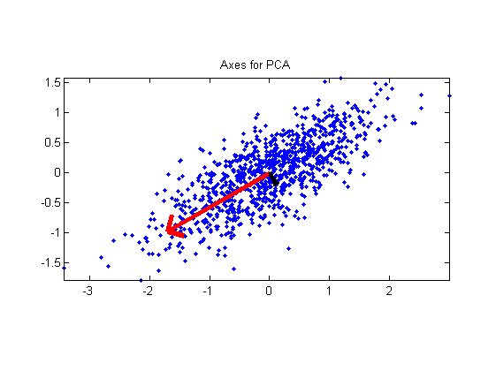
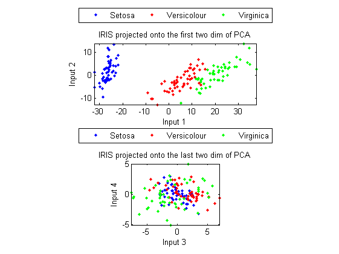

Principal Component Analysis (PCA)
Prinbcipal component analysis (PCA) is an effective statistical technique for reducing the dimensions of a given unlabeled high-dimensional dataset while keeping its spatial characteristics as much as possible. It has found immense applications in image compression, pattern recognition (face recognition in particular) and data clustering. Depending on the field of application, PCA is also known as the discrete Karhunen- Loeve transformation, or the Hotelling transform.
More specifically, PCA transforms the dataset into a new coordinate system such that the projection onto the first coordinate have the greatest variance among all possible projections, and the projection onto the second coordinate have the second greatest variances, and so on. By finding these successive coordinates (or principal components), we can visualize the distribution of the original dataset after projecting it onto a low-dimensional space. In other words, PCA provides a best meaningful viewing angle that can disperse the dataset as much as possible.
Contents
A basic example to verify the functionality of PCA
To verify the functionity of PCA, we can display PCA-generated basis for an ovally-distributed dataset, as shown next.
clear j dataNum = 1000; data = randn(1,dataNum)+j*randn(1,dataNum)/3; data = data*exp(j*pi/6); % Rotate 30 degree data = data-mean(data); % Mean subtraction plot(real(data), imag(data), '.'); axis image; DS.input=[real(data); imag(data)]; [DS2, v, eigValue] = pca(DS); v1 = v(:, 1); v2 = v(:, 2); arrow = [-1 0 nan -0.1 0 -0.1]+1+j*[0 0 nan 0.1 0 -0.1]; arrow1 = 2*arrow*(v1(1)+j*v1(2))*eigValue(1)/dataNum; arrow2 = 2*arrow*(v2(1)+j*v2(2))*eigValue(2)/dataNum; line(real(arrow1), imag(arrow1), 'color', 'r', 'linewidth', 4); line(real(arrow2), imag(arrow2), 'color', 'k', 'linewidth', 4); title('Axes for PCA');
It is obvious that the principal component (first direction for the projection basis) is along the direction where the data dispersion after projection is maximized.
Applying PCA to dataset for classification
In the next example, we perform PCA on the 150 entries of IRIS dataset:
DS=prData('iris'); DS2=pca(DS); subplot(2,1,1); dsScatterPlot(DS2); axis image xlabel('Input 1'); ylabel('Input 2'); title('IRIS projected onto the first two dim of PCA'); DS2.input(1:2, :)=[]; % Get rid of the first two dimenions subplot(2,1,2); dsScatterPlot(DS2); axis image xlabel('Input 3'); ylabel('Input 4'); title('IRIS projected onto the last two dim of PCA');
Warning: data dim is larger than 2. The plot is based on the first 2 dimensions
The first plot demonstrates the projection of the dataset along the first and second principal components, while the second plot displays the same dataset projection along the third and fourth principal components. Again, it is obvious that the first plot has a wider dispersion than the second plot. (Note that the second plot has a much smaller range than the first plot, indicating the variance after projection is also much smaller.)
The goal of PCA is to have the maximum variance after projection, where the class labels, if exist, are not considered in the projection. As a result, PCA is not really optimized for datasets of classification problems. However, since "maximum variance after projection" and "maximum separation between classes after projection" have some characteristics in common, sometimes we use PCA for classification problems too. For instance, in the case of face recognition, the dimension of each face image is so large, and we need to apply PCA for dimension reduction and thus better accuracy.
Copyright 2011-2012 Jyh-Shing Roger Jang.